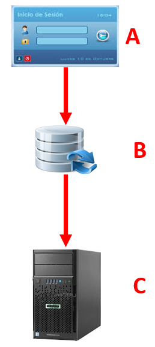
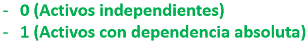
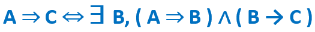
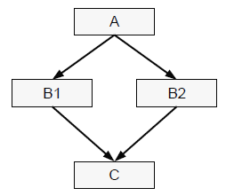

Los activos esenciales son la información y los servicios prestados; pero estos activos dependen de otros activos más prosaicos como pueden ser los equipos, las comunicaciones, las instalaciones y las frecuentemente olvidadas personas que trabajan con aquellos.
De manera que los activos vienen a formar árboles o grafos de dependencias donde la seguridad de los activos que se encuentran más arriba en la estructura o ‘superiores’ depende de los activos que se encuentran más abajo o ‘inferiores’. Estas estructuras reflejan de arriba hacia abajo las dependencias, mientas que de abajo hacia arriba la propagación del daño caso de materializarse las amenazas.
Por ello aparece como importante el concepto de “dependencias entre activos” o la medida en que un activo superior se vería afectado por un incidente de seguridad en un activo inferior.
Se dice que un “activo superior” depende de otro “activo inferior” cuando las necesidades de seguridad del superior se reflejan en las necesidades de seguridad del inferior. O, dicho en otras palabras, cuando la materialización de una amenaza en el activo inferior tiene como consecuencia un perjuicio sobre el activo superior. Informalmente puede interpretarse que los activos inferiores son los pilares en los que se apoya la seguridad de los activos superiores.
Aunque en cada caso hay que adaptarse a la Organización objeto del análisis.
Para descubrir y modelar las dependencias entre activos, siempre hay que empezar poniendo en lo más alto la información y los servicios. Depende de cada circunstancia el que sea antes la información o los servicios; pero lo más frecuente es que el valor esté en la información y deba ser respetado por los servicios que la manejan.
Establecer dependencia entre Activos es una tarea delicada que puede acabar mal. Antes de dar por bueno un modelo de dependencias hay que trazar para cada activo todos los activos de los que depende directa o indirectamente y se debe responder positivamente a las siguientes preguntas.
- Están todos lo que son? es decir, si se han identificado todos los activos en los que puede ser atacado indirectamente el activo valorado.
- Son todos los que están? es decir, si realmente el activo valorado puede ser atacado en todos esos activos de los que depende.
Interesa tanto de saber si un activo A depende o no de otro activo B, como de saber en qué grado.
La dependencia puede ser transitiva:
La dependencia se calificará a través de un coeficiente, al cual se lo denominará “grado de dependencia”.

Como la dependencia puede ser directa o indirecta, se calculará del cierre transitivo de las dependencias directas entre activos.

A depende (indirectamente) de C sí y sólo si existe algún activo B tal que A depende directa o indirectamente de B y B depende directamente de C.
Calculando el grado de dependencia como:
E incluso puede dibujar figuras de diamante:
(A → B1) ∧ (A → B2) ∧ (B1→ C) ∧ (B2→ C)
A depende de B1 y B2; B1 y B2 dependen de C.
